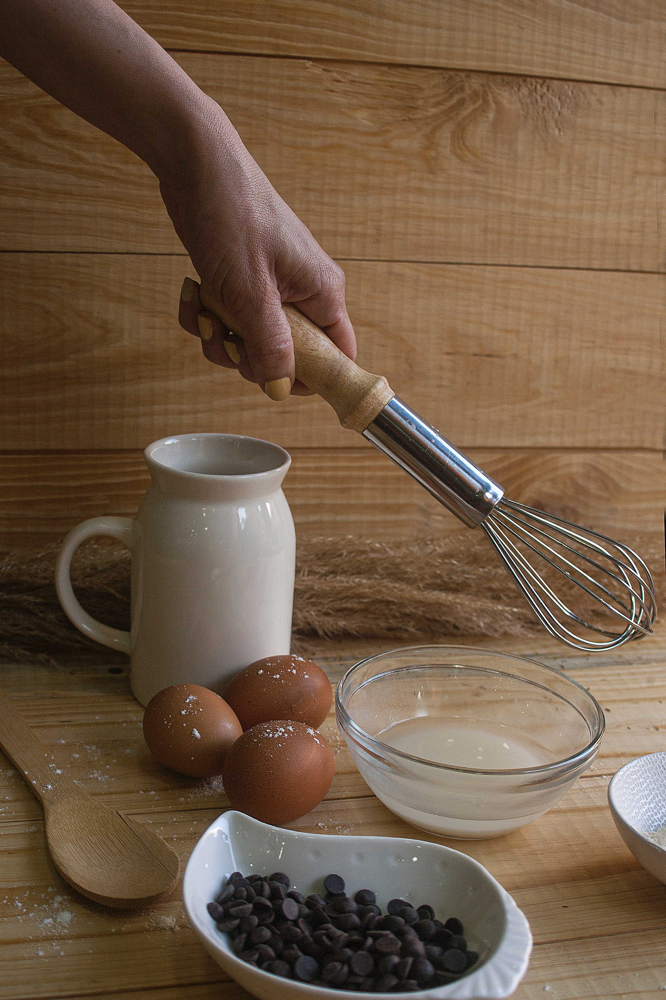
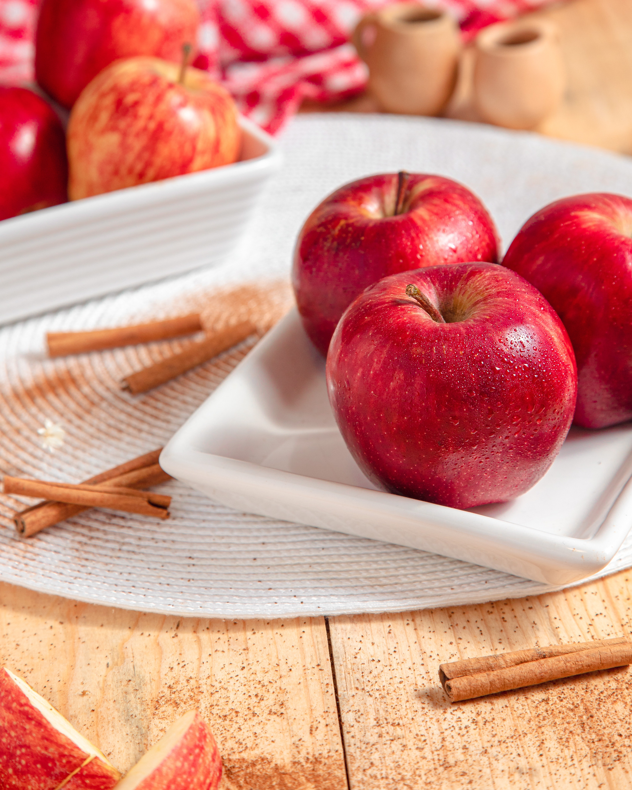

concepto esencial en nuetra alimentacion implica que todos los elementos involucrados deben provenir de lo más cerca posible. Esto implica, en el caso ideal, tener granjeros, procesadores, vendedores y restaurantes en la misma localidad.

Todos sabemos que las personas que se alimentan de forma saludable y equilibrada, y con alimentos variados, tienen una mayor probabilidad de: crecer y desarrollarse sanos y fuertes; tener más energía para trabajar y disfrutar de sí mismos; sufrir menos infecciones y otras enfermedades.